UD 2 El lenguaje PHP. 4 Estructuras de Control
Duración Estimada: 8 sesiones, 16 horas
RA2 Escribe sentencias ejecutables por un servidor Web reconociendo y aplicando procedimientos de integración del código en lenguajes de marcas.
- A Se han reconocido los mecanismos de generación de páginas Web a partir de lenguajes de marcas con código embebido.
- B Se han identificado las principales tecnologías asociadas.
- C Se han utilizado etiquetas para la inclusión de código en el lenguaje de marcas.
- D Se ha reconocido la sintaxis del lenguaje de programación que se ha de utilizar.
- E Se han escrito sentencias simples y se han comprobado sus efectos en el documento resultante.
- F Se han utilizado directivas para modificar el comportamiento predeterminado.
- G Se han utilizado los distintos tipos de variables y operadores disponibles en el lenguaje.
- H Se han identificado los ámbitos de utilización de las variables.
RA3 Escribe bloques de sentencias embebidos en lenguajes de marcas, seleccionando y utilizando las estructuras de programación.
- A Se han utilizado mecanismos dedecisión en la creación de bloques de sentencias.
- B Se han utilizado bucles y se ha verificado su funcionamiento.
- C Se han utilizado «arrays» para almacenar y recuperar conjuntos de datos.
- D Se han creado y utilizado funciones.
- E Se han utilizado formularios Web para interactuar con el usuario del navegador Web.
- F Se han empleado métodos para recuperar la información introducida en el formulario.
- G Se han añadido comentarios al código
OBJETIVOS Entrega 2
Estructuras de control, Creación de funciones y formularios
Introducción
En la clase anterior estudiamos cómo mostrar datos por pantalla y algunas de las funciones de php para tratar tipos, constantes, variables superglobales. En la clase de hoy, veremos bucles, condicionales y otras estructuras de control del flujo.
Estructuras de control
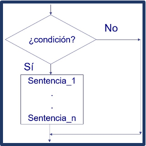
Para definir el flujo de un programa en PHP, al igual que en la mayoría de lenguajes de programación, hay sentencias para dos tipos de estructuras de control :
- sentencias condicionales , que permiten definir las condiciones bajo las que debe ejecutarse una sentencia o un bloque de sentencias; y
- sentencias de bucle , con las que puedes definir si una sentencia o conjunto de sentencias se repite o no, y bajo qué condiciones.
1. Condicionales
1.1 if / elseif / else .
La sentencia if permite definir una expresión para ejecutar o no la sentencia o conjunto de sentencias siguiente.
- Si la expresión se evalúa a true (verdadero), la sentencia se ejecuta.
- Si se evalúa a false (falso), no se ejecutará.
Cuando el resultado de la expresión sea false, puedes utilizar else para indicar una sentencia o grupo de sentencias a ejecutar en ese caso.
- Otra alternativa a else es utilizar elseif y escribir una nueva expresión que comenzará un nuevo condicional.
Cuando, como sucede en el ejemplo, la sentencia if, elseif o else actúe sobre una única sentencia, no será necesario usar llaves.
Tendrás que usar llaves para formar un conjunto de sentencias siempre que quieras que el condicional actúe sobre más de una sentencia.
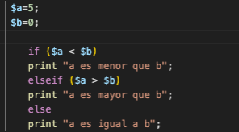
💻Programa11: If, else, elseif
Programa11.php: Isset, Unset y isnull (Ruta:dwes/UD2/Entrega2/Programa11_if.php)
Vamos a probar un poco siguiendo el manual de php: lee el artículo de la documentación php y configura algunos bloques de condicionales con if, else y elseif que vienen en los ejemplos, comprende también la sintáxis alternativa con un ejemplo
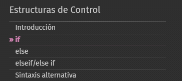
1.2 Switch
switch . La sentencia switch es similar a enlazar varias sentencias if comparando una misma variable con diferentes valores.
- Cada valor va en una sentencia case .
- Cuando se encuentra una coincidencia, comienzan a ejecutarse las sentencias siguientes hasta que acaba el bloque switch , o hasta que se encuentra una sentencia break .
- Si no existe coincidencia con el valor de ningún case , se ejecutan las sentencias del bloque default , en caso de que exista.
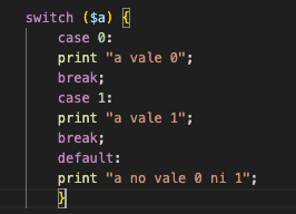
💻Programa12: Switch
Programa12.php: Switch (Ruta:dwes/UD2/Entrega2/Programa12_Switch.php)
Corrije este código desordenado con la estructura de switch. Fíjate en el de arriba
<?php
echo "Otro día";
switch ($dia)
case 1:
echo "Lunes";
break;
case 3:
echo "Miércoles";
break;
break;
} {
case 2:
echo "Martes";
break;
$dia = 3; // Cambia este valor para probar
default:
?>
1. 3 Match (PHP 8)
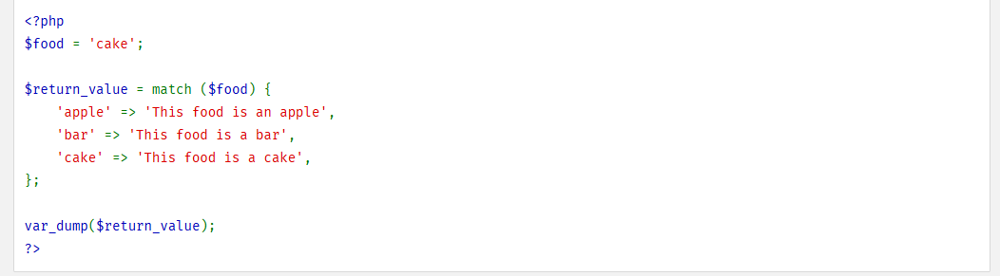
La expresión match ramifica la evaluación basada en una comprobación de identidad de un valor.
- De forma similar a una sentencia
switch, una expresiónmatchtiene una expresión de sujeto que se compara con múltiples alternativas. - A diferencia de
switch, se evaluará a un valor muy parecido al de las expresiones ternarias. - A diferencia de
switch, la comparación es una comprobación de identidad (===) en lugar de una comprobación de igualdad débil (==). - Las expresiones match están disponibles a partir de PHP 8.0.0.
https://www.php.net/manual/es/control-structures.match.php
Ejemplo
<?php
$videojuego = "Zelda";
$genero = match($videojuego) {
"FIFA" => "Deportes",
"Call of Duty" => "Shooter",
"Zelda" => "Aventura",
"Minecraft" => "Sandbox",
default => "Género desconocido",
};
echo "El juego $videojuego pertenece al género: $genero";
?>
💻Programa13: Match
Programa12.php: Switch (Ruta:dwes/UD2/Entrega2/Programa13_match.php)
Comenta un poco la estructura match en tu readme y crea el programa usando y adaptando los ejemplos anteriores.
Busca y documenta en qué ocasiones puede ser útil
2. Bucles
2.1 While / Do While / For
Existen diferentes tipos de bucles en PHP:
· while: Usando while puedes definir un bucle que se ejecuta mientras se cumpla una expresión. La expresión se evalúa antes de comenzar cada ejecución del bucle.
· do / while: Es un bucle similar al anterior, pero la expresión se evalúa al final, con lo cual se asegura que la sentencia o conjunto de sentencias del bucle se ejecutan al menos una vez.
· for : Son los bucles más complejos de PHP. Al igual que los del lenguaje C, se componen de tres expresiones:
for (expr1; expr2; expr3)
o La primera expresión, expr1 , se ejecuta solo una vez al comienzo del bucle.
o La segunda expresión, expr2 , se evalúa para saber si se debe ejecutar o no la sentencia o conjunto de sentencias. Si el resultado el false, el bucle termina.
o Si el resultado es true, se ejecutan las sentencias y al finalizar se ejecuta la tercera expresión, expr3 , y se vuelve a evaluar expr2 para decidir si se vuelve a ejecutar o no el bucle.
· Puedes anidar cualquiera de los bucles anteriores en varios niveles. También puedes usar las sentencias break , para salir del bucle, y continue , para omitir la ejecución de las sentencias restantes y volver a la comprobación de la expresión respectivamente.
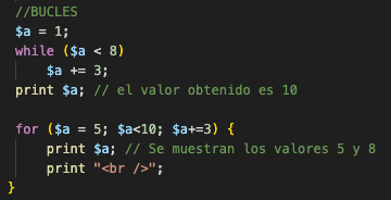
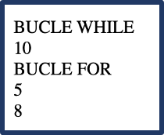
💻Programa14: loops
Programa14.php: Switch (Ruta:dwes/UD2/Entrega2/Programa14_loops.php)
Completa el scriptPrograma14.php y sustituye el valor ??? para que:
- Use un bucle for para mostrar los números del 1 al 5.
- Use un bucle while para mostrar los números pares del 2 al 10.
- Use un bucle do...while para mostrar la cuenta atrás desde 5 hasta 1.
- Realiza captura con el resultado y después amplía el código mostrando hasta y desde el 50
<?php
// Programa14.php
echo "<h3>Ejemplo con for</h3>";
for ($i = 1; $i <= ???; $i???) {
echo "Número: $i <br>";
}
echo "<h3>Ejemplo con while</h3>";
$j = 2;
??? ($j <= 10) {
echo "Par: $j <br>";
$j ??? 2;
}
echo "<h3>Ejemplo con do...while</h3>";
$k = 5;
???{
echo "Cuenta atrás: $k <br>";
??? ;
} while ($k >= ???);
?>
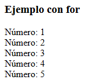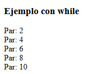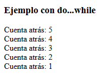
2.2 Foreach (arrays & objetos)
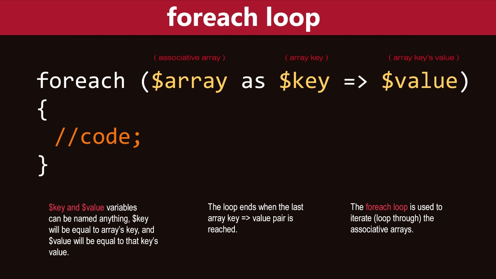
El constructor foreach proporciona un modo sencillo de iterar sobre arrays.
foreach funciona sólo sobre arrays y objetos, y emitirá un error al intentar usarlo con una variable de un tipo diferente de datos o una variable no inicializada.
- Existen dos sintaxis:
foreach (expresión_array as $valor)
`sentencias `
foreach (expresión_array as $clave => $valor)
`sentencias`
La primera forma recorre el array dado por expresión_array.
- En cada iteración, el valor del elemento actual se asigna a
$valory - el puntero interno del array avanza una posición (así en la próxima iteración se estará observando el siguiente elemento).
La segunda forma además asigna la clave del elemento actual a la variable $clave en cada iteración.
También es posible personalizar la iteración de objetos.
💻Programa15: Foreach
Programa15.php: Switch (Ruta:dwes/UD2/Entrega2/Programa15_Switch.php)
Prueba, analiza y documenta el siguiente script.
Una vez que lo entiendas, imprime con foreach la variable superglobal $_SERVER para que aparezca en negrita los valores CLAVE/VALOR
<?php
// Array simple de videojuegos
$videojuegos = ["Zelda", "FIFA", "Minecraft", "Call of Duty"];
// --- Foreach en su forma simple (solo valores)
echo "<h3>Lo mostramos con print_r()</h3>";
print_r($videojuegos);
echo "<br>";
echo "<h3>Recorrido simple con foreach</h3><br>";
foreach ($videojuegos as $juego) {
echo "Juego: $juego <br>";
}
// --- Foreach con clave => valor
echo "<h3>Recorrido con FOREACH clave => valor</h3>";
foreach ($videojuegos as $indice => $juego) {
echo "Índice $indice => $juego <br>";
}
// --- Matriz bidimensional: videojuegos con género
$listaJuegos = [
["nombre" => "Zelda", "genero" => "Aventura"],
["nombre" => "FIFA", "genero" => "Deportes"],
["nombre" => "Minecraft", "genero" => "Sandbox"],
["nombre" => "Call of Duty", "genero" => "Shooter"]
];
echo "<h2>Matriz bidimensional</h2>";
echo "<h3>Lo mostramos con print_r()</h3>";
print_r($listaJuegos);
echo "<br>";
echo "<h3>Recorrido de matriz bidimensional</h3>";
foreach ($listaJuegos as $item) {
echo "El juego {$item['nombre']} es de género {$item['genero']} <br>";
}
?>
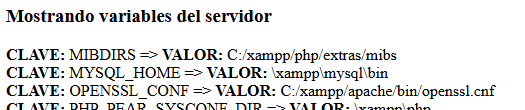
Si te da tiempo, analiza también y amplía con los siguientes ejemplos el script anterior
php
/* Ejemplo 3 de foreach: clave y valor */
$a = array(
"uno" => 1,
"dos" => 2,
"tres" => 3,
"diecisiete" => 17
);
foreach ($a as $k => $v) {
echo "\$a[$k] => $v.\n";
}
/* Ejemplo 4 de foreach: arrays multidimensionales */
$a = array();
$a[0][0] = "a";
$a[0][1] = "b";
$a[1][0] = "y";
$a[1][1] = "z";
foreach ($a as $v1) {
foreach ($v1 as $v2) {
echo "$v2\n";
}
}
Actividad Entregable
Entregable
Tienes la info en la sección "Actividad entregable"